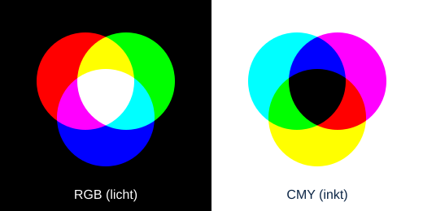

Hoe maakt een computer kleuren?
Een digitale afbeelding bestaat uit heel veel kleine vierkantjes: pixels. Het woord pixel komt van picture element. Als je heel ver inzoomt op een foto, zie je de losse pixels. Elke pixel heeft 1 kleur.
Elke pixel op een beeldscherm bestaat uit 3 lampjes: rood, groen en blauw. Door de lampjes feller of zwakker te laten branden, maak je alle andere kleuren. Het RGB-model begint met een zwarte achtergrond: alle lampjes uit is zwart, alle lampjes vol aan is wit.

| Kleur 1 | Kleur 2 | Kleur 3 | Nieuwe kleur |
|---|---|---|---|
| - | - | - | Zwart |
| Rood | Groen | Blauw | Wit |
| Rood | Groen | - | Geel |
| Rood | Blauw | - | Paars |
| Blauw | Groen | - | Turquoise |
Een computer kan niet werken met "een beetje rood". Daarom krijgt elk lampje een getal van 0 tot en met 255. Dat komt doordat elke kleur 1 byte gebruikt: 8 bits, en 28 = 256 mogelijkheden. Geel is bijvoorbeeld (255, 255, 0): rood vol aan, groen vol aan, blauw uit.
Op websites schrijf je kleuren vaak in hexadecimaal (16-tallig). Hexadecimaal heeft 16 cijfers: 0 tot en met 9 en daarna A tot en met F (A = 10, B = 11, C = 12, D = 13, E = 14, F = 15). Elke kleur krijgt 2 tekens, met een # ervoor: #RRGGBB.
Zo reken je 242 om naar hex:
242 ÷ 16 = 15, rest 2
15 = F en 2 = 2, dus 242 = F2
Terugrekenen: F × 16 + 2 = 15 × 16 + 2 = 240 + 2 = 242 ✓
| Kleur | Naam | Decimaal (R, G, B) | Hexadecimaal |
|---|---|---|---|
| Rood | 255, 0, 0 | #FF0000 | |
| Groen | 0, 255, 0 | #00FF00 | |
| Blauw | 0, 0, 255 | #0000FF | |
| Geel | 255, 255, 0 | #FFFF00 | |
| Oranje (mijn site) | 242, 140, 40 | #F28C28 | |
| Donkerblauw (mijn site) | 11, 37, 69 | #0B2545 | |
| Middenblauw (mijn site) | 29, 78, 137 | #1D4E89 |
Klik op een gekleurd vak hieronder. Er opent een kleurkiezer. Daarin kun je zelf een hex-code typen (bijvoorbeeld F28C28) of de R-, G- en B-getallen invullen, en je ziet meteen welke kleur het wordt. Klik op de pijltjes in de kleurkiezer om te wisselen tussen HEX en RGB.
Wil je nog meer spelen? Op w3schools kun je met schuifjes de rood-, groen- en blauwwaarde veranderen: RGB-kleuren proberen op w3schools.
Reken eerst zelf uit en klik daarna op de vraag om het antwoord te zien.
255 ÷ 16 = 15, rest 15. 15 = F, dus 255 = FF.
140 ÷ 16 = 8, rest 12. 12 = C, dus 140 = 8C.
4 × 16 + E = 4 × 16 + 14 = 64 + 14 = 78.
Rood = 00 (uit), groen = FF (vol aan), blauw = FF (vol aan). Groen + blauw = turquoise (cyaan). Controleer het met de kleurkiezer hierboven!
CMY = (255 − 255, 255 − 0, 255 − 0) = (0, 255, 255).
Papier is wit en geeft zelf geen licht. Een printer gebruikt daarom geen lampjes maar inkt. Daarom is er het CMY-model: cyaan, magenta en yellow (geel). Hier begin je met een witte achtergrond en voeg je kleur toe met inkt.
Cyaan, magenta en geel samen geven geen mooi zwart maar donkergrijs, en het papier wordt heel nat. Daarom heeft een printer ook zwarte inkt. Zo ontstaat het CMYK-model: de K staat voor key (zwart).
Van RGB naar CMY: CMY = (255 − R, 255 − G, 255 − B)
Voorbeeld: oranje RGB (255, 128, 0) wordt CMY (255 − 255, 255 − 128, 255 − 0) = (0, 127, 255)